SECTION : F2
Roll No. 76


My name is Prince Badola, and I am from Dehradun, Uttarakhand.
I am currently pursuing a Bachelor of Technology in Computer Science from Graphic Era University.
Prior to this, I completed a Diploma in Computer Science from the same university and my secondary education from Canfield High School (CBSE Board).
I have experience working on small freelance assignments and academic projects. One of my key achievements includes winning a certificate in the "Best Out of Waste" competition. I have also earned a C++ programming certification and developed a project based on Object-Oriented Programming (OOP).
Regarding my family background, we are four members: my father, mother, younger sister, and me.
My hobbies include coding and learning new technologies during my free time.
 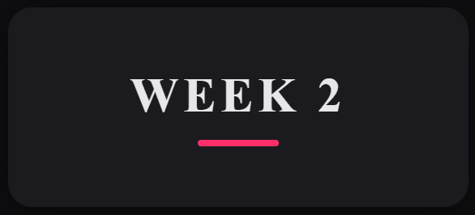
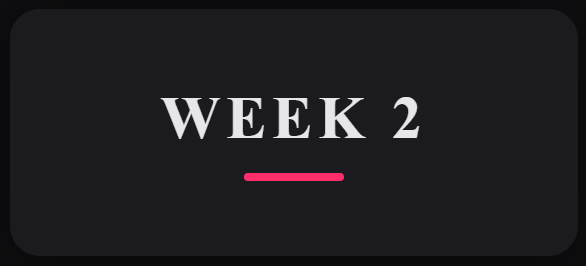
 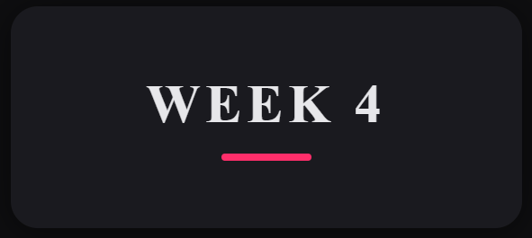
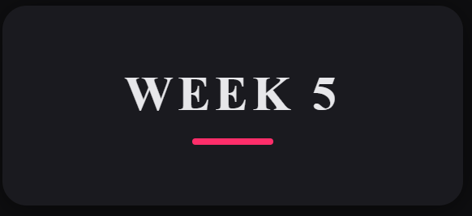
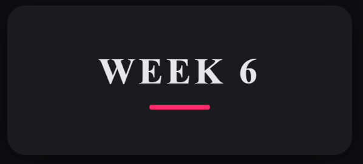
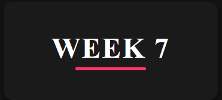
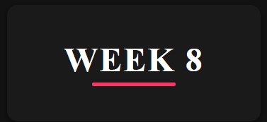
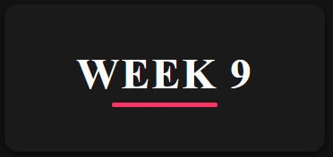
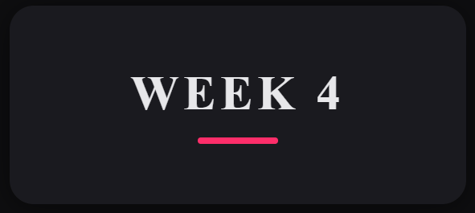
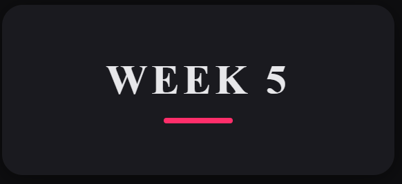
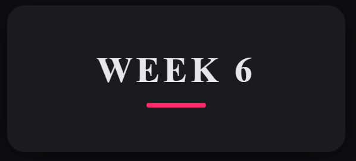
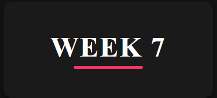
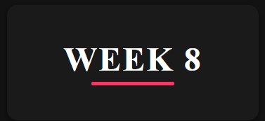
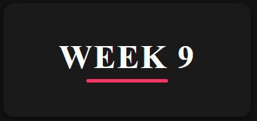
I learned how to give a proper self-introduction. I understood how to structure my introduction by including my name, education, achievements, and hobbies. I also learned:
This week, I focused on identifying my strengths and areas for improvement in communication. I became more confident but also realized I need to work on eye contact and fluency.
In Week III, we created a role play on a surprise birthday. I learned:
We performed a role play on a surprise birthday celebration. Through this, I learned:
I learned how to give a proper and effective presentation. Through this, I understood:
In Week Six, I learned about public speaking, its objectives, different forms, and the importance of developing this skill. Public speaking helps individuals express their thoughts confidently, influence others, and communicate ideas effectively in various situations, such as presentations, debates, or discussions. I also explored different types of public speaking topics and the strategies to handle each one efficiently.
Overall, learning about these topic types and strategies has improved my understanding of how to prepare and deliver effective speeches depending on the purpose and audience.
In Week Seven, I learned about the Art of Conversation, which focused on developing effective communication skills through small talk and telephone etiquettes. This week helped me understand how small talk can make interactions more comfortable and how proper telephone etiquettes create a positive impression in professional and personal settings.
Overall, this week improved my ability to communicate effectively, helped me practice professional behavior over the phone, and boosted my confidence in conversational skills through role play exercises.
In Week Eight, I revised and reflected on all the topics learned in the previous weeks. This revision helped me strengthen my understanding and improve my communication skills. I reviewed:
By revising all these concepts, I became more confident in speaking, presenting, and expressing my ideas clearly. It also helped me understand how continuous practice leads to personal and professional growth.
In Week Nine, my group (Group 8) gave a presentation on laws against cyberbullying and harassment. This topic was important because it helped us understand how legal systems protect people from online threats and misuse of technology.
This presentation made me more aware of digital responsibility and the importance of respecting others online. It also helped me grow as a communicator and a responsible digital citizen.